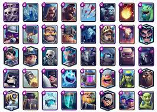
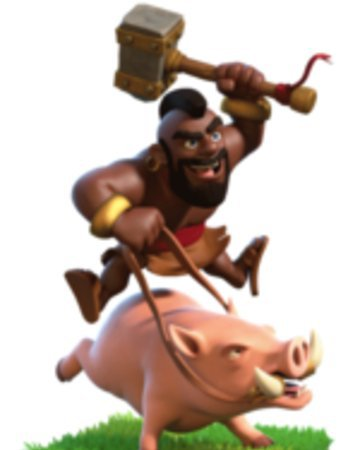

¿Qué son las cartas?
Las cartas son la escencia de este juego, sin estas el juego no tendría sentido. Las cartas son tropas que desplegamos sobre la arena para que luchen y ganemos la partida.
A fecha de mayo de 2024 , hay 111 cartas en el juego, que vienen en cinco rarezas: común, especial, épica, legendaria y campeón. Las cartas tienen como nivel máximo el 15. Todas las cartas son del nivel 11 para torneos.
La carta mas querida entre todas es el "montapuercos", es en un hombre musculoso que monta su puerco y que golpea con su martillo para destruir las torres enemigas.
Maestrias
En la actualización de marzo de 2022 se agregó el sistema de maestrías el cual ofrece buenas recompensas al cumplir con ciertas tareas. Se desbloquean a partir del nivel 7 y para desbloquear el dominio de cartas de cada una de las cartas del juego es necesario ganar 5 partidas con cada una, así como tenerlas a cierto nivel (7 en las comunes, 8 en las especiales, 9 en las épicas, 10 en las legendarias y 12 en los campeones) para poder acceder a las misiones de dominio de cartas. Una vez logrado esto, habrán dos conjuntos de tareas, uno simple y otro más complejo, los cuales a su vez se dividen en 3 niveles de tareas (algunas cartas ya cuentan con 3 conjuntos de tareas). Dependiendo el tipo de carta y los bloques completados se irán obteniendo mejores recompensas, así como un emblema que irá mejorando conforme a los niveles de dominio superados. En las cartas de dos bloques de tareas, el nivel máximo es el 7, mientras que en las de tres, el nivel máximo es el 10. Cabe recalcar que al cumplir las tareas también se te otorgará experiencia para subir el nivel del Rey, excepto cuando ya se tiene el nivel 14.
Algunas de las recompensas de las maestrias por rarezas
| Rareza | Tarea 1 | Tarea 2 | Tarea 3 |
|---|---|---|---|
| Común | 200 cartas (de las que se cumple la maestría) | 2000 de oro | 15000 de oro |
| Especial | 100 cartas (de las que se cumple la maestría) | 4000 de oro | 150 gemas |
| Épica | 20 cartas (de las que se cumple la maestría) | 6000 de oro | 150 gemas |
| Legendaria | 2 cartas (de las que se cumple la maestría) | 8000 de oro | 150 gemas |
| Campeón | 1 carta (de la que se cumple la maestría) | 10000 de oro | 150 gemas |